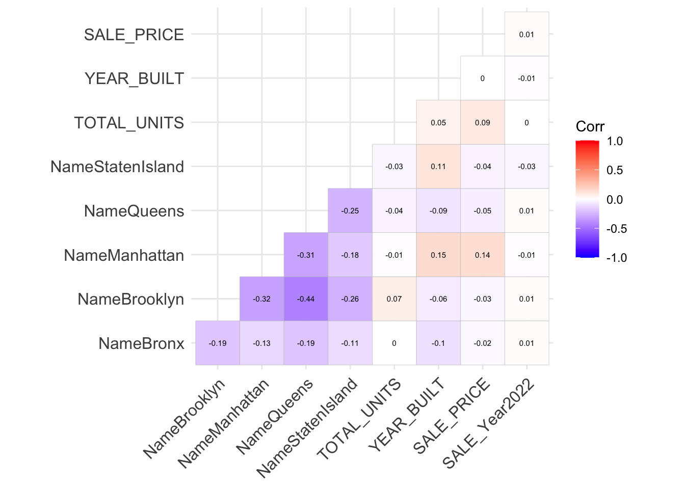

Chapter 6 Correlation

The above graph shows the correlation plot for different variables. First, Manhattan has a positive correlation with house sale price of 0.14 compared to other boroughs, and total units also has a positive correlation with house sale price of 0.09. Manhattan and StatenIsland have a positive correlation with year built, which means that these two boroughs’ building are built in the later years and the houses have a younger age.